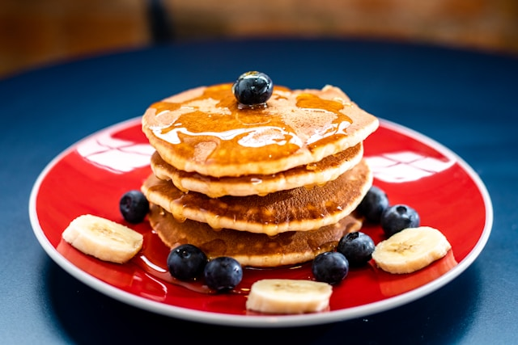

Home <<
Pancake

Perfect pancakes are easier to make than you think. This pancake recipe produces thick, fluffy, and all-around delicious pancakes with just a few ingredients that are probably already in your kitchen (and it's so much better than the boxed stuff).
Ingredients
- Flour: This homemade pancake recipe starts with all-purpose flour.
- Baking powder: Baking powder, a leavener, is the secret to fluffy pancakes.
- Sugar: Just a tablespoon of white sugar is all you'll need for subtly sweet pancakes.
- Salt: A pinch of salt will enhance the overall flavor without making your pancakes taste salty.
- Milk and butter: Milk and butter add moisture and richness to the pancakes.
- Egg: A whole egg lends even more moisture. Plus, it helps bind the pancake batter together.
Steps
- Gather all ingredients.
- Sift flour, baking powder, sugar, and salt together in a large bowl. Make a well in the center and add milk, melted butter, and egg; mix until smooth.
- Heat a lightly oiled griddle or pan over medium-high heat. Pour or scoop the batter onto the griddle, using approximately 1/4 cup for each pancake; cook until bubbles form and the edges are dry, about 2 to 3 minutes.
- Flip and cook until browned on the other side. Repeat with remaining batter.
- Serve and enjoy!